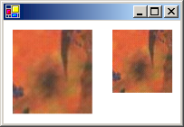

Практическое руководство. Повышение производительности за счет отключения автоматического масштабирования
GDI+ Автоматическое масштабирование образа при рисовании, снижает производительность. Кроме того, можно управлять масштабирования изображения, передав размеры прямоугольника назначения DrawImage метод.
Например, следующий вызов DrawImage метод задает верхний левый угол (50, 30), но не указывает прямоугольник назначения.
e.Graphics.DrawImage(image, 50, 30); // upper-left corner at (50, 30)
Несмотря на то, что это простейший вариант DrawImage метод с точки зрения количества обязательных аргументов, не обязательно наиболее эффективен. Если используется разрешение GDI+ (обычно 96 точек на дюйм) отличается от разрешения, указанного в Image объекта, а затем DrawImage метод производит масштабирование рисунка. Например, предположим, что Image объект имеет 216 пикселей в ширину и значение хранимых разрешение по горизонтали 72 точек на дюйм. Поскольку 216/72 равно 3, DrawImage производит масштабирование рисунка, чтобы он включал линию толщиной 3 дюйма с разрешением 96 точек на дюйм. То есть DrawImage выводит изображение шириной 96 x 3 = 288 пикселей.
Даже если разрешение экрана 96 точек на дюйм, GDI+ , вероятно масштабирования изображения так, будто разрешение экрана 96 точек на дюйм. Это потому, что GDI+ Graphics связывается с контекста устройства и когда GDI+ контекст устройства для разрешения экрана и результат обычно является 96, независимо от фактического экранного разрешения запросов. Можно избежать автоматического масштабирования, указав в прямоугольник назначения в DrawImage метод.
Пример
В следующем примере рисуется тот же образ дважды. В первом случае ширина и высота прямоугольника назначения не указаны, а изображение масштабируется автоматически. Во втором случае ширину и высоту (измеряется в пикселях) прямоугольника назначения указываются должны совпадать как ширину и высоту исходного изображения. На следующем рисунке показано изображение, рисуемое дважды:

Image image = new Bitmap("Texture.jpg");
e.Graphics.DrawImage(image, 10, 10);
e.Graphics.DrawImage(image, 120, 10, image.Width, image.Height);
Компиляция кода
Предыдущий пример предназначен для работы с Windows Forms и требует PaintEventArgs e, который является параметром Paint обработчик событий. Замените Texture.jpg в вашей системе путь и имя образа.